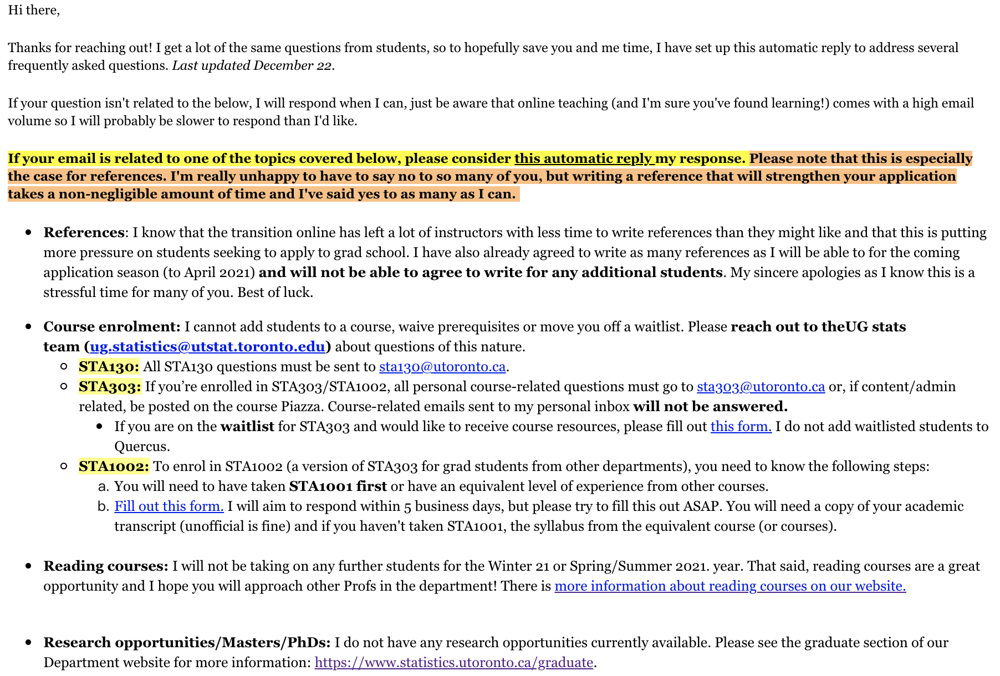

5 Modules
If you would like a PDF copy of the slides, you can ‘Print to PDF’ in your browser. Shortcut: Cmd+P or Ctrl+P, and select ‘Save as PDF’ (or similar).
5.1 Module 1
5.1.1 Instructor information
Prof. Liza Bolton
Course email: sta303@utoronto.ca
Help hours: Wednesdays 1:10—2:00 p.m. ET and 4:10—5:00 p.m. ET
5.1.1.1 My autoreply if you email me personally

5.1.2 Upward management
‘Upward management’ is basically managing your manager.1 If you make their life easier and help them be more effective, this should also make your life easier and is a good investment in your own career and skills building.
While our course isn’t a business, some of the basic parts of this concept apply well to your time at univeristy AND can set you up for success in graduate studies and your future career.
But why should you put effort into upward managing me? Well, while I will always seek to treat all students fairly and to listen to your feedback, YOU can make this easier or harder for me, and thus make this course better or worse for yourselves.
For example, if I have to use all my time and energy following up on unclear emails for more information and dealing with students who haven’t followed instructions etc. etc….I won’t have that energy to put into writing TeamUp! activities to give you extra practice and opportunities to earn bonus points.
5.1.2.1 Upward management tips
5.1.2.1.0.1 Communicate using the tools your manager prefers.
- In business, this means knowing who likes face-to-face vs email, or whether your manager would rather receive an instant message than an email for a quick question.
- In STA303, this means:
- Using Piazza for all course admin and content questions.
- Using the appropriate forms for accommodations and regrade requests.
- Emailing sta303@utoronto.ca for private issues not otherwise covered by the other tools, e.g. emailing me your Accommodation Serivces letter, requesting an extension to an assessment that conflicts with essential travel.
- Asking questions in office hours.
5.1.2.2 Upward management tips
5.1.2.2.0.1 Write good emails (when emails are appropriate)
.pull-left[ - In business, this might mean: - Choosing who should be the main recipients vs CCed/BCCed. - Ensuring your contact details are clear in your signature. - Make sure the subject line is informative and short - Making the text of the email as clear and concise as possible. - Use proper grammar and punctuation. - Don’t use emoji in formal emails. If in doubt, leave ’em out.] .pull-right[ - In STA303, this looks like: - Everything in the right-hand column, plus the following. - Starting an email with “Hi Prof. Bolton,” or “Hi Liza,”[1] - Sign off the email with your preferred name (i.e. what should I call you when I reply) and if your have different official name, include that and your UTORid below your name. - Subject line including [Prof. Bolton] or [TA name] if your email is for a specific person.]
.footnote[.small[ [1]“Dear Madam” and “To my esteemed professor” make me uncomfortable.]]
5.1.2.3 Upward management tips
5.1.2.3.0.1 Understand your manager’s goals.
- In business, this might look like understanding their KPIs and how you can help make sure these are met.
- In STA303, most of my goals are for you, like that you learn useful statistical skills, improve your writing skills etc. I also personally want to improve as an instructor and have fun talking about somethign I love.
- You can help me with these goals by working on this course every week, trying your best, asking for help early and often, engaging with feedback gathering mechanisms and providing constructive feedback if something is not working.
5.1.2.4 Upward management tips
5.1.2.4.0.1 Demonstrate self-management and resilience while also asking for help and flagging problems early.
.midi[ - In business, this might look like: - Being proactive about addressing possible problems before they occur. Managers like a ‘no surprises’ policy. - Preparing a list of questions to cover in a meeting or to compile in an organised fashion into one email (instead of ten). - Searching for answers yourself before asking your manager and improving your strategies for finding available information.
- In STA303, this looks like:
- Putting in a little effort into find answers before posting on Piazza/asking in class .tiny[(have you searched Piazza? have you re-read/watched the assigned materials? have your checked the syllabus and recent announcements?)]
- Come to office hours often, lists of questions very welcome!
- Getting in touch (or asking your registrar to) early if you might hate to miss a lot of class. It is usually easier to find a solution if I know things ahead of time, or as soon as possible after. ]
5.1.3 FAQ
References
Can you write me a reference? I’m desperate!
.midi[If this is the first time I’ve been your instructor, please do not ask me for a reference during this semester. I know some of you might be really struggling to get enough right now, but even if I could accept more at this stage, I do not write for students who haven’t completed a course with me.]
Research opportunities and other employment
Do you have any research opportunities available?
.midi[Not currently, but I will promote Research Assistant (RA) and Teaching Assistant (TA) roles in class notices/announcements if/when they come up.]
Reading courses
I want to do a reading course in Stats, can you supervise me?
.midi[I am not accepting more students for reading courses this semester or during Spring/Summer 2021. I won’t be considering applicants for Fall 2021 until August. If you’re interested in doing a reading course (which are awesome!) I hope you will approach other Profs in the department! There is more information about reading courses on our website.
STA303 pre-requisites
I didn’t take STA302 or an equivalent course, can I still take STA303?
No, sorry. We enforce pre-reqs strictly. This isn’t up to me.
5.1.4 Recap of linear models
5.1.5 Why model?
- The goal of a model is to provide a (relatively) simple summary of a dataset.
- We can describe data AND make predictions.
5.1.6 Linear models
.middle[ .large[ In a linear model,
\(y_i = \beta_0 + \beta_1x_{1i} + ... + \beta_px_{pi} + \epsilon_i\)
The response is predicted by a linear function of explanatory (or predictor) variables plus an error term.
] ]
a.k.a. # DATA = MODEL + ERROR
I used to haaaate this concept because I learned it while doing a consulting internship at a large international professional services firm and I really struggled with my manager.↩︎